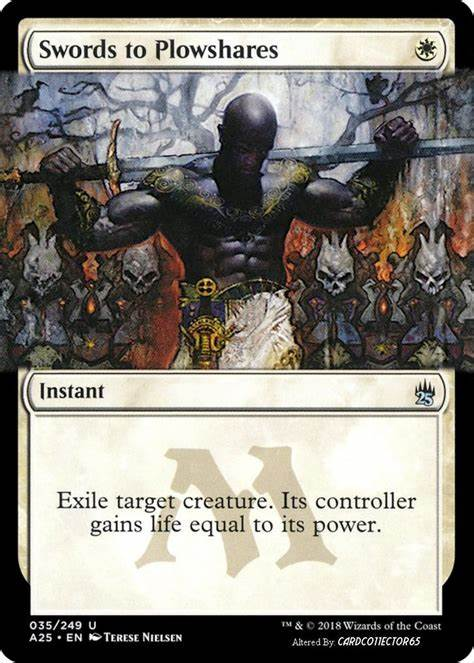
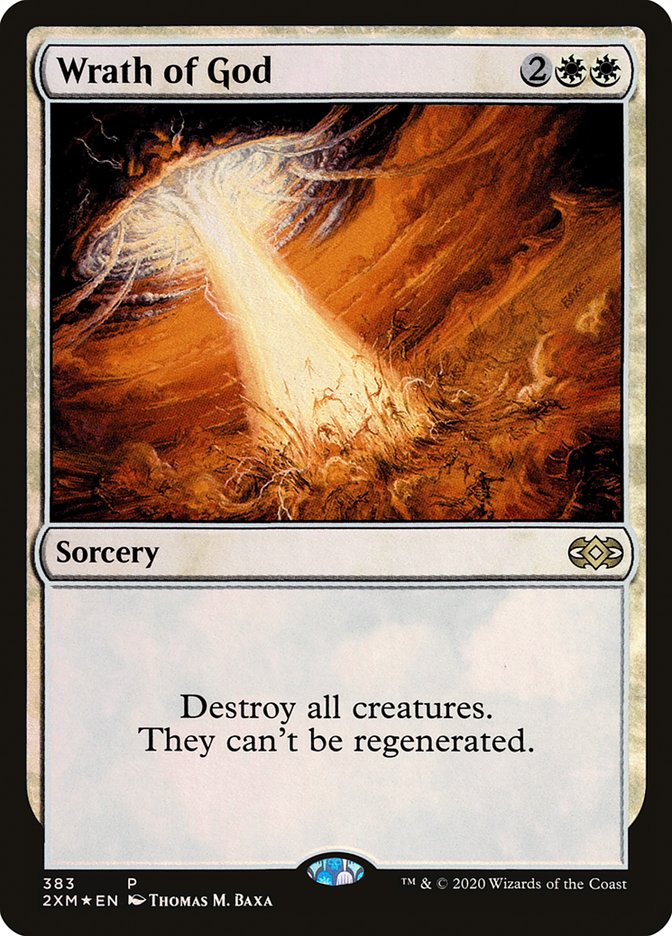
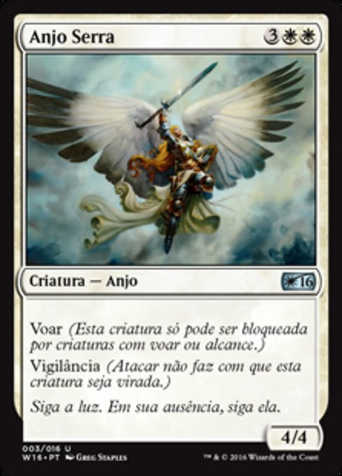

A Teoria das Cores em Magic: The Gathering (MTG) é uma parte fundamental do jogo, pois define os cinco tipos de mana e os diferentes estilos de jogo que esses tipos representam. Cada cor tem uma filosofia e uma mecânica própria, que influencia como você constrói o deck, joga e interage com o adversário.
Branco: Ordem, proteção e comunidade
Teoria: O branco é a cor da ordem, da justiça e da paz. Ele busca harmonia, igualdade e proteção para todos. A filosofia do branco é proteger a comunidade e garantir que todos sigam regras justas e seguras.
Na prática: O branco costuma ter criaturas defensivas, com foco em resistência e efeitos que ajudam o grupo (como curar, proteger e dar buffs a outras criaturas). Ele também usa muitas cartas de controle, como exílio e destruição de permanentes, para garantir que tudo esteja em ordem.
Exemplo de cartas: Swords to Plowshares, Wrath of God, Serra Angel.


